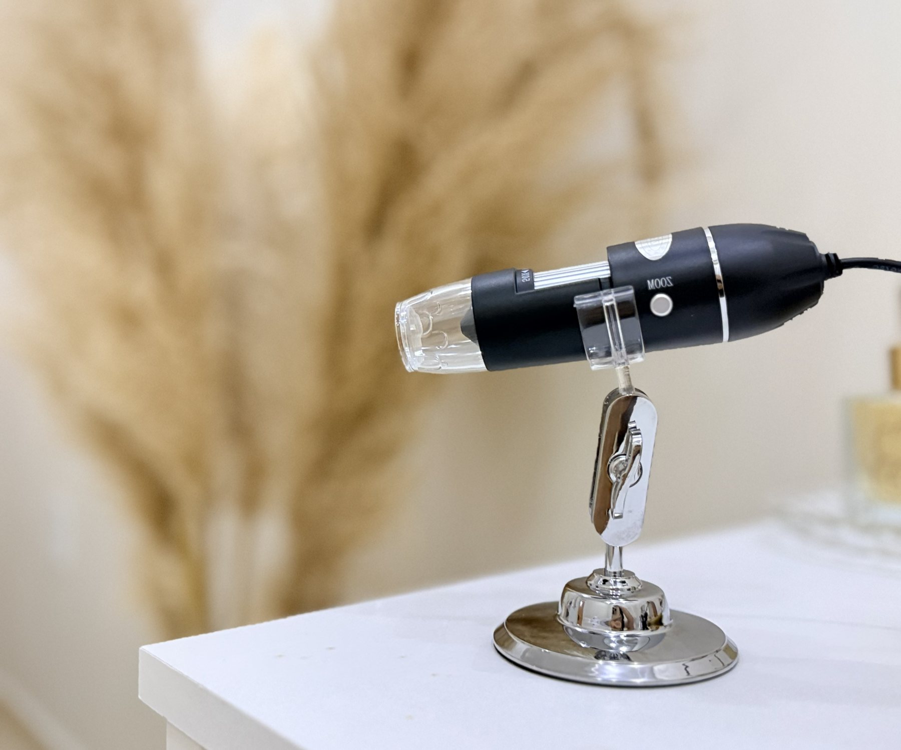
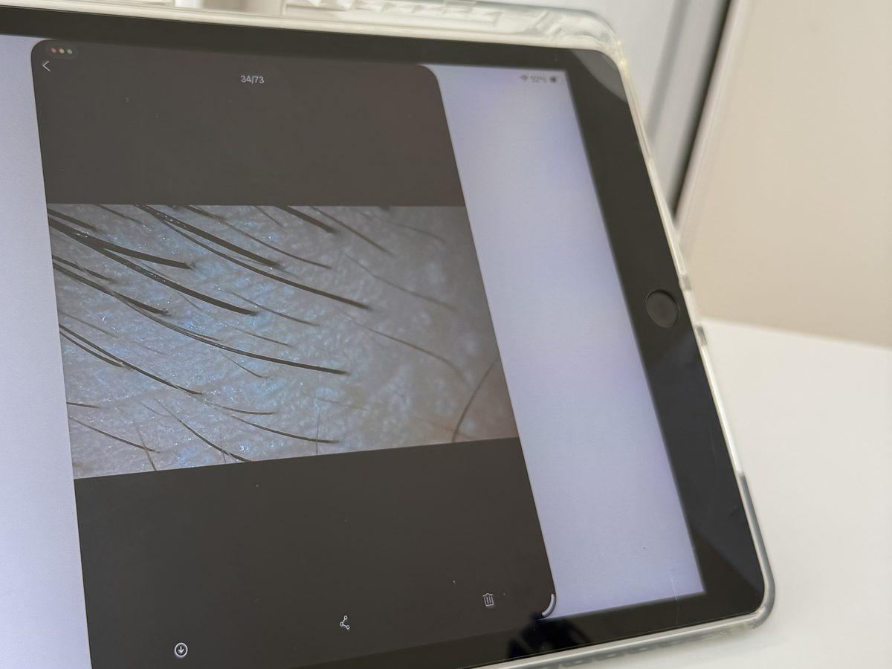
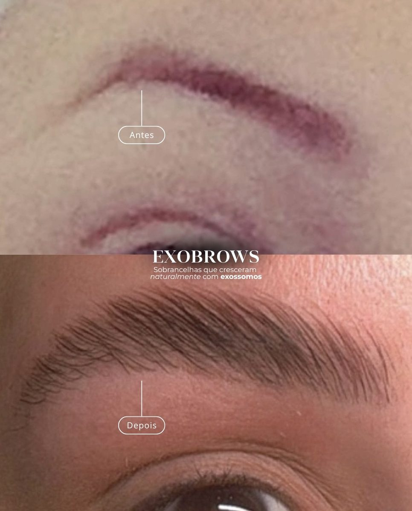
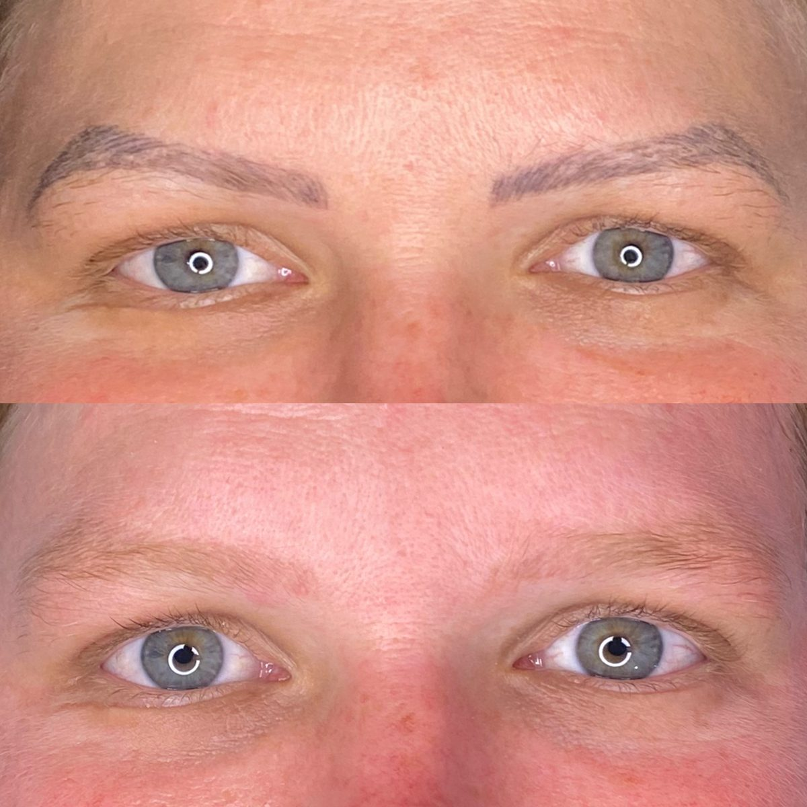

Tratamentos pensados para a saúde do seu fio
A avaliação personalizada é sempre o primeiro passo. A partir dela, o protocolo é montado sob medida: quando o couro cabeludo precisa de reparo, tratamos primeiro a pele — para só depois entrar com a regeneração dos fios.
› Começar pela avaliação
Avaliação personalizada
Cada sobrancelha possui uma história, características e necessidades únicas. Por isso, antes de iniciar qualquer tratamento, realizamos uma avaliação individualizada para compreender as condições da pele e dos fios.
É nesse primeiro momento que identificamos as necessidades específicas, analisamos as possibilidades e definimos o caminho mais adequado para cada caso.
Mais do que escolher um procedimento, queremos entender o que suas sobrancelhas realmente precisam.
Agendar avaliação
Regenera Brows
Faça sua sobrancelha crescer de novo naturalmente.
Protocolo de regeneração para sobrancelhas enfraquecidas, falhadas ou que perderam densidade ao longo do tempo.
Com o uso de biotecnologia coreana e ativos como os exossomos, o protocolo busca estimular o ambiente de regeneração dos tecidos e favorecer a saúde dos fios, respeitando as características e o potencial de resposta de cada pessoa.
- Não é micropigmentação. Nenhum pigmento é colocado na sua pele.
- Não é transplante. Nenhum fio é implantado e não há cirurgia.
- Não cobrimos a falha. Reconstruímos o seu próprio fio. O resultado é a sua sobrancelha de volta.
O primeiro passo para recuperar a naturalidade das suas sobrancelhas começa com uma avaliação individualizada.

Despigmentação a laser
Um novo começo para suas sobrancelhas.
Sua micropigmentação antiga já não combina com você? O pigmento mudou de cor, o desenho perdeu a harmonia ou você deseja renovar completamente suas sobrancelhas?
A despigmentação a laser é uma tecnologia que auxilia na remoção gradual de pigmentos indesejados, respeitando a integridade da pele e as características de cada caso.
É o primeiro passo para deixar o passado para trás e abrir espaço para uma nova versão das suas sobrancelhas.
Outros procedimentos
A Ste Blume também realiza:
Design de sobrancelhas
Realizado para trazer mais harmonia para o olhar através da limpeza dos fios. Feito na pinça e na linha. Com opção de henna ou coloração para trazer mais preenchimento e cor para as sobrancelhas.
Brow lamination
Procedimento que alinha e direciona os fios das sobrancelhas, deixando-os mais organizados, alinhados e com aparência de maior volume.
Lash lifting
Procedimento que curva e eleva os cílios naturais desde a raiz, proporcionando um efeito de cílios mais alongados, definidos e destacados, sem precisar de extensões ou curvex.
Epilação egípcia facial
É uma técnica de remoção dos pelos faciais com o auxílio de uma linha, que remove os fios desde a raiz, proporcionando uma pele mais lisinha.
Nanofios
Técnica que é a evolução da micropigmentação, onde realizamos o desenho de alguns fios que se encaixam e camuflam com os reais. Tem duração de em média de 1 ano.
Remoção de tatuagem
Tratamento indicado para quem deseja se livrar de tatuagens indesejadas, proporcionando o clareamento progressivo da região e respeitando as características de cada pele.
Os resultados variam conforme a avaliação individual e as características de cada pessoa. Este conteúdo é informativo e não substitui a avaliação profissional.